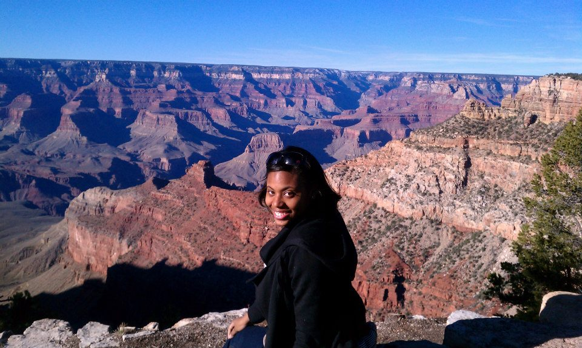

-
Monique Williamson
If I had to choose, Curious George would be my spirit guide. We are both precocious, have a thirst for knowledge and an enthusiasm for everything we do. I have always been a curious person, from asking my parents a million questions growing up, to asking my clients a million and one in our counseling sessions. In my career as a therapist, I learned the value of exploration and patience. I lean on both skills daily when debugging code. While studying at Dev Bootcamp I used JavaScript, Ruby on Rails, AngularJS and many other frameworks to build web applications. I led a team that built an app to fight intolerance and prejudice called Diversify. We brought together users who shared similar interests across different demographics. As a developer, I am building a career that harnesses my creativity to improve the world for a much larger audience than my past career. I love analyzing and designing websites to maximize their user experiences. Communication skills were essential to my past career, so I work well in teams and pairing. I am also comfortable working independently or taking the lead on tasks that require motivation and ambition.